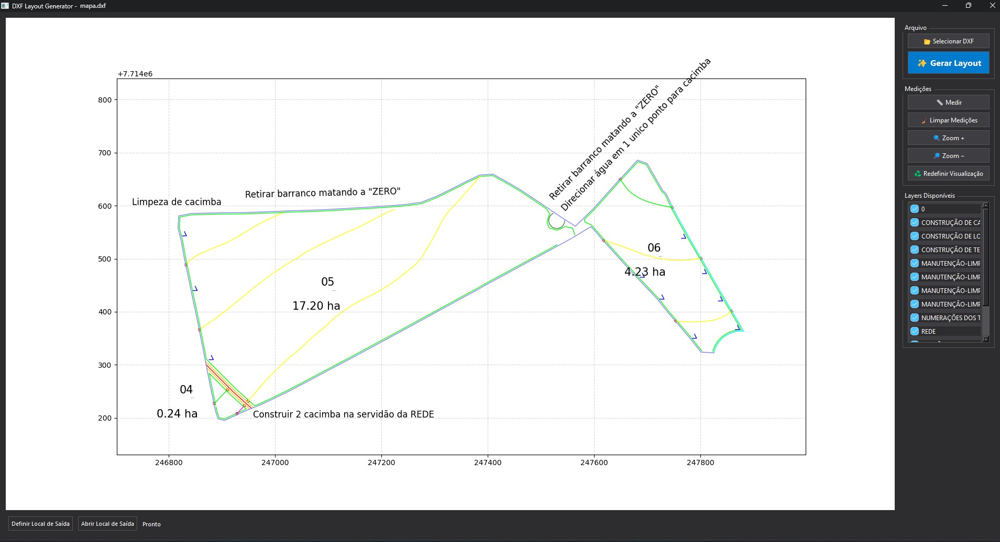
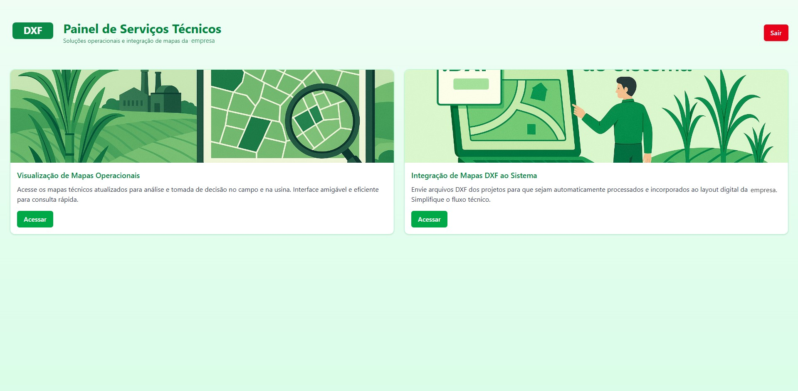

Aberto a vagas de desenvolvedor, remoto
Diego
Murari
Desenvolvedor Full Stack
Java, Angular e TypeScript. Construo sistemas completos, do banco de dados à tela, e provo com testes.
Do modelo de dados à interface, nas mesmas mãos.
Sou desenvolvedor Full Stack com experiência em APIs RESTful (Spring Boot, NestJS e FastAPI), interfaces em Angular e React e PostgreSQL. Gosto de sistemas onde a regra importa: a conta precisa bater com a planilha, a nota precisa bater com o agendamento, o relatório precisa bater com a realidade.
Já entreguei dashboards, integrações de pagamento e assinatura digital e automações em Python, com ganhos medidos de tempo e de qualidade. Mantenho projetos próprios com código aberto no GitHub.
- Base
- Franca, SP, Brasil
- Procuro
- Vagas de desenvolvedor, de preferência remoto
- Estudo
- Engenharia de Software, Uni-FACEF (2026)
- Idiomas
- Inglês avançado, português nativo
- Em preparação
- AWS Solutions Architect Associate
Três sistemas, rodando.
Filtre por tecnologia para ver onde cada uma aparece.


-
NexusOps
Plataforma de Service Desk e Operações de TI
Portal do solicitante e console do analista em um fluxo único: abertura, triagem, atribuição e resposta de chamados. Regras de roteamento com simulador, SLA configurável por tipo e prioridade e webhooks para integrar com outros sistemas.
Back-end modular em Java 21 e Spring Boot 3 (Spring Modulith), front-end em Angular 17+, PostgreSQL 16, Redis 7, JWT e Docker.
Código no GitHub -
Recebimento Inteligente
Agendamento e controle de recebimento de cargas
O fluxo inteiro, feito sozinho: cadastro e aprovação de fornecedores, agendamento de descarga com leitura automática da NF-e (XML), conferência na portaria, controle da descarga e painel que projeta equipe e custo.
Cálculos validados contra planilha de referência, valores em decimal exato, mais de 650 testes automatizados e fluxo principal que funciona sem internet.
Código no GitHub -
DXF Reader Web
Leitura e visualização de arquivos de desenho técnico (DXF)
Nasceu como um app desktop em Python que lê arquivos DXF, mostra as camadas, mede distâncias e gera o layout em PDF. Depois virou uma plataforma web: interface em React com componentes reutilizáveis, back-end em FastAPI e PostgreSQL.
Reduziu em 50% o tempo de geração de relatórios e em 25% os erros de interpretação de dados.
Onde eu entreguei.
-
Desenvolvedor Backend (PJ) CroSoften
- APIs RESTful em NestJS/TypeScript, com autenticação JWT, pagamentos com Mercado Pago e assinatura digital com ZapSign.
- Modelagem de dados e otimização de consultas com PostgreSQL e Prisma em produção.
- APIs documentadas em Swagger/OpenAPI e validadas com Postman; Docker e Gitflow.
-
Estagiário de Desenvolvimento Usina Cevasa
- Plataforma de processamento de DXF que reduziu em 50% o tempo de geração de relatórios.
- Dashboards interativos em React, reduzindo em 25% os erros de interpretação de dados.
- APIs FastAPI com ganho de 35% no tempo de resposta e relatórios Excel/PDF automatizados, reduzindo em 40% o esforço manual.
-
Analista de Redes (CLT) Telefônica
- Automação de rotinas operacionais em Python, reduzindo o esforço manual em tarefas repetitivas.
- Monitoramento no Zabbix integrado a dashboards no Grafana; coordenação de incidentes via ServiceNow.
Com o que eu trabalho
- Linguagens
- Java 21 · TypeScript · JavaScript · Python · SQL
- Back-end
- Spring Boot · Spring Modulith · NestJS · FastAPI · Node.js · JWT · OpenAPI
- Front-end
- Angular 17+ · React · Next.js · HTML · CSS · Design System
- Dados e testes
- PostgreSQL · SQLite · Redis · Prisma · Drizzle · JUnit · Mockito · Vitest
- Ferramentas
- Docker · Git · GitHub · AWS · Linux · Postman · Grafana
Formação e conquistas
Bacharelado em Engenharia de Software Uni-FACEF · Franca, SP ·
- 3º lugar no Hackathon de 28 horas da Uni-FACEF, entre 16 equipes.
- Participação no AWS Summit São Paulo 2025.
Tem uma vaga que precisa de um dev?
Respondo rápido. O WhatsApp é o caminho mais curto.